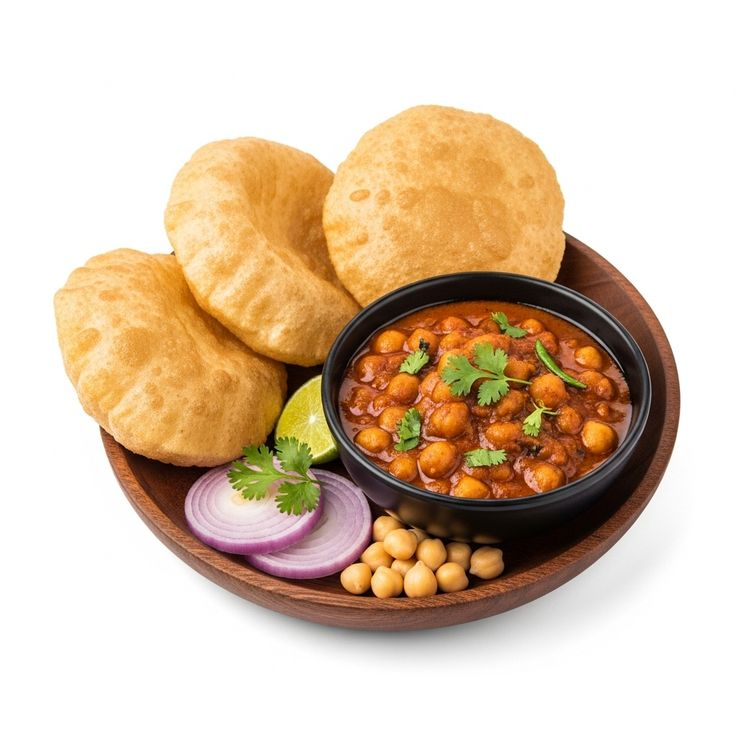

Chhole Bhature

Description
Chole bhature (also known as chana bhatura) is a classic North Indian and Punjabi dish that pairs a spicy, tangy chickpea curry (chole) with a soft, fluffy, deep-fried leavened flatbread (bhatura)
Ingredients
For the Chhole (Spicy Chickpea Curry)
- Kabuli chana (white dried chickpeas): 1 cup (soaked in water overnight)
- Tea bags: 2 (used while boiling to give the chhole their signature dark color)
- Onions: 2 medium, finely chopped or pureed
- Tomatoes: 3 medium, pureed
- Ginger-garlic paste: 1 tablespoon
- Green chilies: 2-3, slit down the middle
- Whole spices: 1 bay leaf, 1 black cardamom, 3-4 cloves, and a 1-inch cinnamon stick
- Powdered spices: 2 tablespoons chhole masala, 1 teaspoon red chili powder, 1 teaspoon coriander powder, ½ teaspoon turmeric
- Tangy element: 1 teaspoon amchoor (dry mango powder) or anardana (pomegranate seed powder)
- Cooking fat: 3 tablespoons oil or ghee
- Salt: To taste
- Fresh coriander: 2 tablespoons, chopped (for garnish)
For the Bhature (Fried Leavened Bread)
- Maida (all-purpose flour): 2 cups
- Sooji (semolina): 2 tablespoons (adds a crispy texture)
- Plain yogurt (curd): ½ cup (helps ferment the dough)
- Leavening agents: ½ teaspoon baking powder and ¼ teaspoon baking soda
- Sugar: 1 teaspoon
- Salt: ½ teaspoon
- Oil: 1 tablespoon (for kneading into the dough)
- Oil for frying: Sufficient amount for deep frying
For Serving
- Sliced red onions
- Lemon wedges
- Pickle or spicy green chutney
Steps
- Knead and Rest the Dough: In a large bowl, mix the maida, sooji, yogurt, baking powder, baking soda, sugar, and salt. Add the 1 tablespoon of oil and knead with warm water until you have a smooth, pliable dough. Cover it with a damp cloth and let it rest in a warm place.
- Boil the Chickpeas: In a pressure cooker, add the soaked chickpeas, salt, and the two tea bags along with enough water to submerge them by an inch. Cook on medium heat for 5 to 6 whistles until the chickpeas are completely soft and easily mashed between your fingers. Discard the tea bags and reserve the dark water.
- Cook the Masala Base: Heat the oil or ghee in a heavy-bottomed pan or kadhai. Add the whole spices (bay leaf, black cardamom, cloves, cinnamon) and let them crackle. Add the pureed onions and sauté until golden brown. Stir in the ginger-garlic paste and slit green chilies, cooking for a minute, then add the tomato puree and cook until the oil begins to separate from the edges.
- Simmer the Chhole: Lower the heat and mix in the chhole masala, red chili powder, coriander powder, turmeric, and amchoor. Pour in the boiled chickpeas along with their reserved dark water. Use the back of your spoon to gently mash a small portion of the chickpeas against the side of the pan—this naturally thickens the sauce. Let it simmer for 15 minutes.
- Roll the Bhature: Pinch off lemon-sized balls from the rested dough. Apply a little oil to your rolling pin and board, and roll the dough out into an oval or round shape, keeping it slightly thicker than a standard roti. Using dry flour will cause the frying oil to burn.
- Fry to Puff: Carefully slide the rolled dough into a kadhai filled with deep, hot oil. Gently press the center of the dough with a slotted spoon—this forces the steam inside to expand, helping it puff up like a balloon. Flip and fry until both sides are golden brown, then drain on paper towels.
- Assemble and Serve: Serve the hot, puffed bhature straight from the oil alongside a bowl of the dark, spicy chhole. Garnish the chhole with fresh coriander, and serve with sliced red onions, a wedge of lemon, and your favorite pickle on the side.
Home